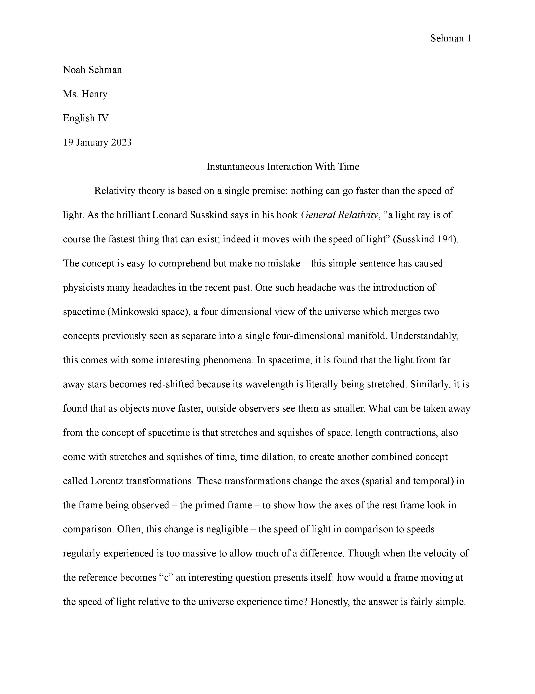

Modular Synth

My longest-running project to date, I am constantly searching for and builing the perfect instrument. One that both makes entire sets of music and also works as a fully custom guitar pedal all while redefining what making music means to me.
Reverse Fourier
My first ever completed math project, the Reverse Fourier is a single formula which allows sin wave harmonic addition to be expressed as a single wave with sin(x) factored out. I'm not quite sure how useful it is, but I am sure that this will always have a special place in my heart.
Instantaneous Interaction
For my senior research project, I branched out from theoretical mathematics to theoretical physics. Though I have never been formally trained in relativity theory or quantum mechanics, I was determined to tackle a subject that not only falls into those fields, but also pushed the limits of what was achievable on my own. Clicking the thumbnail page will bring you to the shortened version of my paper "Instantaneous Interaction With Time."
Horiseon

The first challenge for my full-stack development program was for learning about writing and building stylized websites. This site about search engine optimization is a great reference for semantic HTML as well as a good base for how a website should look (at least in my mind haha).